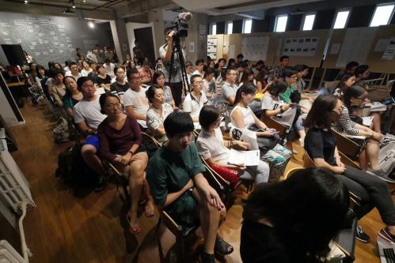
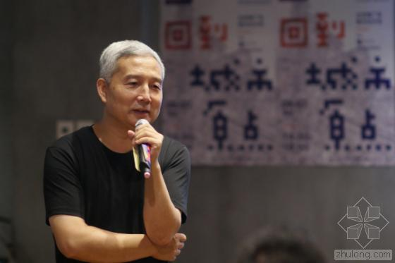
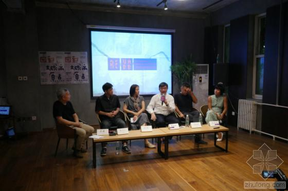
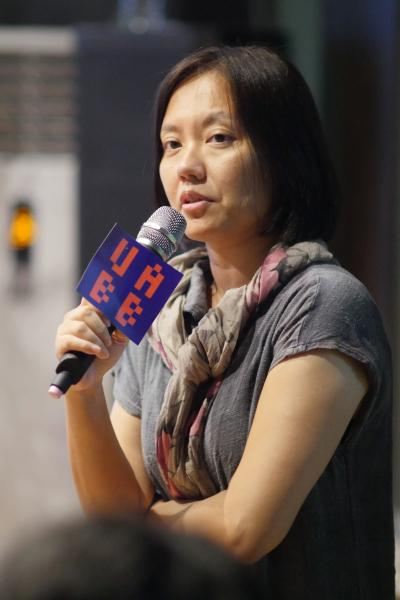
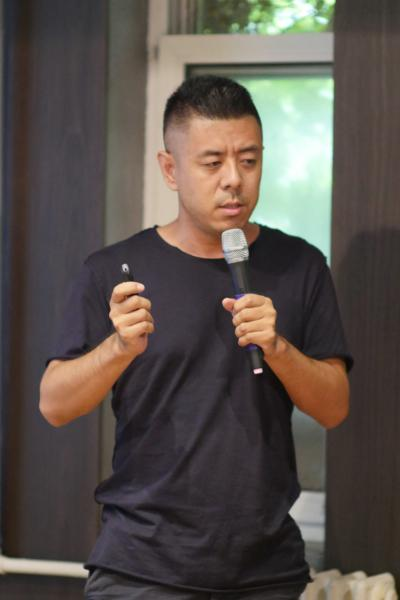
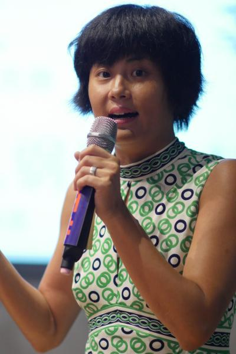

摘要：从城市原点走向城市未来——2015深港城市、建筑双城双年展(以下简称“深双”)北京推广会暨文化沙龙于2015年7月8日于北京单向空间花家地店举行。

沙龙由资深策展人、建筑评论家史建主持，深双主要组织和推动者、深圳公共艺术中心主任黄伟文，本届深双策展人、南沙设计师刘珩，2009年深双分策展人侯唯唯，建筑师马岩松，首届深双策展人、建筑师张永和悉数到场，与观众分享了各自和深双的渊源，并从不同角度阐释了自己对“什么是好的城市”的理解。作为全球唯一以城市及城市化为主旨的展览，经过10年历练，深双已成长为中国具有国际影响力的城市建筑交流平台之一，也受到了国际建筑界的广泛肯定。除了在学术层面上向世界展示当代城市的最新成果，它也在当代艺术与大众间搭起了一座沟通的桥梁。
下图：2015深双北京推广会嘉宾史建、黄伟文、刘珩、张永和、马岩松、侯唯唯进行圆桌讨论
下图：深圳市公共艺术中心主任、深双主要推动者和组织者黄伟文在2015深双北京推广会现场回顾深双十年发展历程
黄伟文首先通过对十年深双展品的梳理，将其归纳为城市开放性 、城市自发性和主体性 、城市日常生活 、城市基础 、城市生命周期 、城市与乡村农业 、城市建筑 、策展城市和学习城市九个面向，结合展品与现实的关联以及对未来的启示，对展览进行了观念性的还原。他从深双与城市的关系出发，强调了城市化本身面临的急迫问题，同时也呼吁更多方面的参与。
从参展人到策展人，刘珩多年来一直在珠三角坚持建筑实践与城市研究，希望借此次策展改变公众对珠三角作为“世界工厂”的扁平认知。接着向大家介绍了本届深双的主题及展览对城市空间影响的期待，今年的深双以“城市原点”（Re-livingtheCity）为主题，相较以往，主题更多关注于人的生活而不仅仅是空间本身。主展场将继续选址中国改革开放的前沿阵地——位于蛇口的大成面粉厂，以此带动蛇口工业区转型升级和城市再造，也非常希望能够借助建筑师的智慧，让这种孵化具有持续性。
马岩松同样分享了自己此前三次的参展经历，从2009年市民广场的“怪物脚印”、2011年的街道项目，到2013年的“山水·城市·综合体”，展览作品一直在探索建筑与城市的关系。今年的作品根据深圳前海目前围海造田以及水污染等现状，带来了“未来海上森林岛”的设想，提出通过散步道网络连接公共艺术空间。他表示，这是人类逃脱现代文明的乐园，亦是一种探索“城市原点”和返璞归真的尝试，希望可以通过这一作品使人们重新反思人类、建筑、城市和自然之间的关系。
侯唯唯专门介绍了今年“UABB学堂”——“一砖一瓦建深圳”大型公众互动活动。活动旨在拉近展览和公众的距离，以乐高积木作为媒介，建立孩子们对城市、建筑的认识，也希望透过孩子们的初心带动设计师的灵感。“UABB学堂”作为深双的一个特色项目，会在展期及筹备期为公众提供一系列的课程和活动，一方面为专业人士提供一个交流的平台，另一方面希望能够感染和激发市民了解更多关于城市及建筑规划知识，带动市民加入到对城市的了解、规划和改造当中。建筑、城市和自然之间的关系。